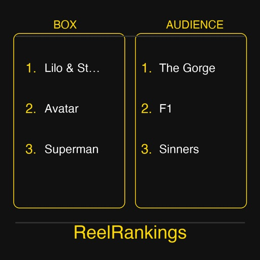
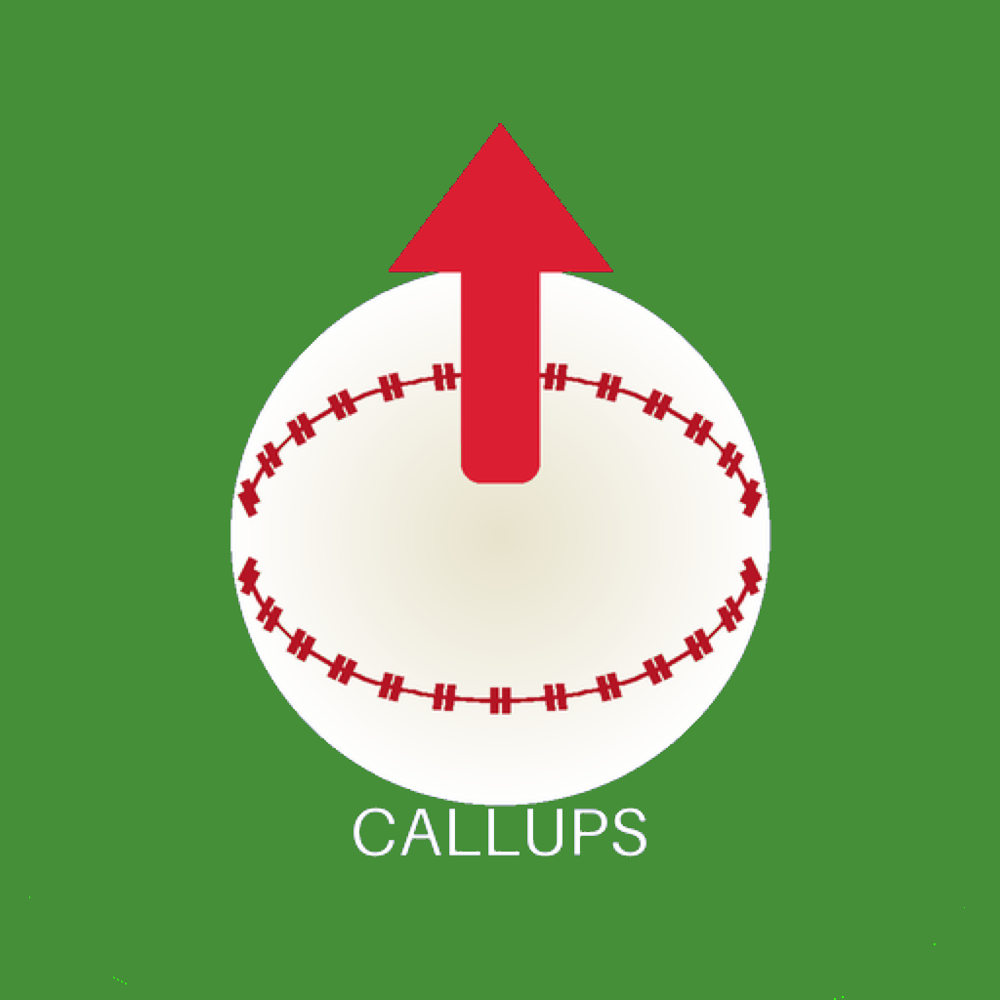

Apps
WeeklyMovies
Weekly Movies is the essential companion for film lovers: discover every movie opening in theaters or arriving on streaming services each week, browse upcoming releases up to a month ahead, and keep track of what you want to see and what you've already watched.
Browse every wide theatrical release and new streaming arrival for the current week, filtered for your country. Tap any film for full details: cast, director, ratings, trailers, and streaming availability. Page forward up to four weeks to see what's coming, or look back four weeks to catch up on anything you missed. Save movies to your Watchlist, then mark them as seen and rate them with up to five stars — your lists sync automatically across all your iPhone, iPad, and Mac devices via iCloud. No ads. No accounts. No data collection.

ReelRankings
Shows the highest grossing films and the most popular films — your choice of 5, 10, 15, or 20 — side by side, for every year since 1939. What was the highest grossing film when you were a kid? How about when your father was a kid? And his father? Notice how the top grossing doesn't always match the top rated. See how tastes changed over the decades. Click any film title to go directly to IMDB for that film.
Ballpark Matchups
You're at the game. You don't need your phone, except for that one moment when you want to know how this batter does with runners in scoring position. Ballpark Matchups delivers exactly what you need to know, exactly when you need it and nothing else. Open the app, see the current batter, the pitcher, and the situational stats that matter right now. No graphics, no animations, no ads, no scores from other sports. Just clean, fast data pulled live from the MLB feed. Glance at it between pitches, put your phone down, and get back to watching the game. Built for fans who want real stats, not an entertainment platform.
Also works at home, at the bar, anywhere you wonder: how does this batter do in late innings with runners in scoring position?

Callup Tracker
List any rookie-eligible baseball player called up to the major leagues that day. Does not work with rumors, but once a team announces, it reports. No need to refresh — every time you open the app it refreshes to ensure you get the latest news. Select your team to see only players for that team. Pick a different date to see who was called up that day.